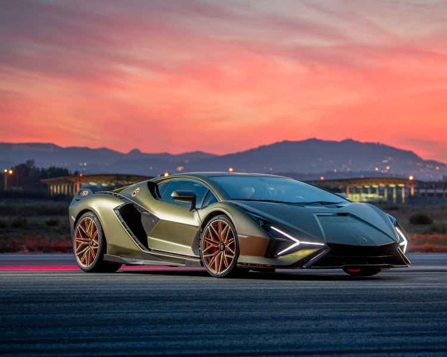

Lambogini
Lamborghini became the Volkswagen Group’s third luxury brand alongside Bentley and Bugatti in 1998. The main reasons for the marriage between Audi and Lamborghini were the similarity of brand profiles and product technology as well as the resulting synergy effects. While the brand from Ingolstadt was able to underscore its positioning in the premium segment, Lamborghini could call upon the resources of a leading technology company and its sales expertise. In November 1998, the new Audi subsidiary was converted into a holding company with three operating companies: Automobili Lamborghini S.p.A.; Matri Marini Lamborghini, producing speedboat engines; and Lamborghini ArtiMarca S.p.A., a company marketing exclusive accessories. With the support of Audi, Lamborghini embarked on the most successful chapter in its 45-year history.
Read More